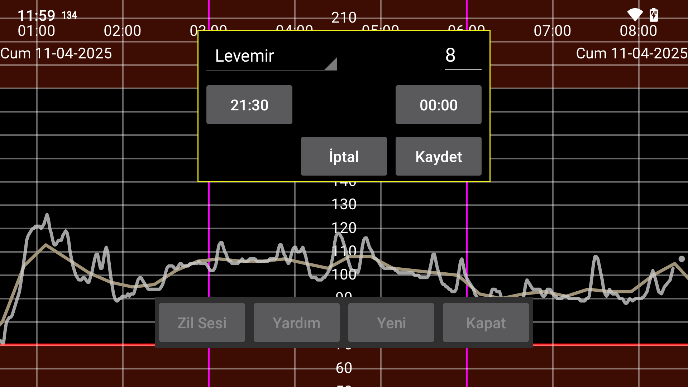

be de fr it nl pl pt ru tr uk zh en
Hatirlaticilar, belirli bir zaman araliginda belirli bir miktari girmediyseniz size hatirlatir.
YENI'ye basarak yeni bir hatirlatici ekleyebilirsiniz.
Belirtilen etiketin altina belirtilen tutari, girmeniz gereken zaman araliginin baslangiç ve bitis saatini belirtin.
Bitis zamanina ulasildiginda program, baslangiç saatinden sonra belirtilen etiketle en azindan bu miktari girip girmediginizi kontrol eder. Kayit olmadiysaniz, bir bildirim gösterilir ve bir zil sesi çalinir.
Örnegin sunu belirtirseniz:
Levemir 6.0
21:30 - 23:55
Ayni gün 21:30'dan sonra en az 6 birim Levemir belirtmediyseniz 23:55'ten sonra hatirlatilacaksiniz.
Belirtilen hatirlaticilar bir listede gösterilir. Düzenlemek için dokunun.
Her sey yolunda giderse, hatirlaticilar Android yeniden baslatildiktan sonra da kullanicinin Juggluco'yu baslatmasina gerek kalmadan çalisir.
Bazi Huawei cihazlarinda, bir programin önyükleme sirasinda baslatilmasina izin verdiginizi belirtmeniz gerekir. Bu, Android Ayarlari -> Pil -> Uygulama baslatma altinda yapilir. Burada Juggluco için Manuel olarak yönetilen seçenegini seçersiniz, böylece Otomatik Baslatma ve Arka Planda Çalistir açik olur. Bu islem, kullanici Juggluco'yu baslatmadan telefonu yeniden baslatma sonrasinda sinyal kaybi alarmlarinin çalismasi için de gereklidir.